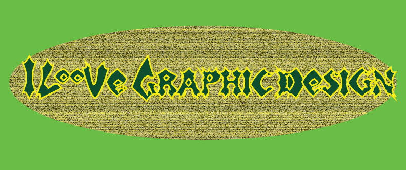

About Me
Image made by Journey Crittendon

Hi, my name is Journey Crittendon and I'm a Media arts major from New York, and I focus on graphic design. This portfolio is showing the work that I did in my MMP 100 class. In this class, we learned about audio, how to make a cohisive story using audio files and stitching them together in the platform called “audacity”. We also learned about photoshop and its basic controls, like masking an object, this was one of my favorite lessons in this class. A close 2nd is our animation module, where we got familiar with the adobe platforms “Illustrator” and “After effects”, learning about vector art and how to animate them to create something simple yet efficient. We had a 3D assignment as well, where we used the software “Tinkercad” to make 3D models that could be used in multiple ways. Lastly, I coded for the first time during this class! Which is how I learned to make this website; showing off my work to you now. We used the website “Pheonix Code” for this project.
I gained many skills in this short time, I’m excited to use them to become a better designer. Hopefully, I’ll be able to make an even cooler website in the near future. Fingers crossed!